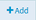

Configuring Rules
You can configure rules to filter malicious requests based on message size, authentication requests, requests from specific mobile devices and applications that could be harmful, requests that could cause an SQL injection attack, requests on anti-virus scan, XML / JSON requests, or use custom filters to avoid malicious attacks.
API Gateway applies rules in the order in which they are displayed on the Threat Protection > Rules screen. Because a violation of a denial rule stops API Gateway from processing a request, hence it is important to prioritize the rules based on the order in, which you want them to be executed. The API Gateway processes denial rules followed by the alert rules.

To configure rules
1. Click Policies in the title navigation bar.
2. Select Threat protection > Rules.
This displays a list of rules that are already configured.
3. Click Add rule.
4. In the Rule properties section provide the following information:
a. Type a name for the rule in the Rule name field.
Valid rule names:

Must be unique.
Must not be empty.
Must not contain spaces.
Must not contain the special characters - ? ~ ` ! @ # $ % ^ & * ( ) - + = { } | [ ] \\ : \" ; ' < > , /
b. Type a description for the rule in the Description field.
c. Select an action to be followed when the policy is violated:
Deny request and alert to deny the access and send an alert when the policy is violated.
Alert to allow the request and send an alert when the policy is violated.
d. Type the alert message text, in the Error message field, to be displayed when the policy is violated.
e. Select the required Request type to which you want to apply the rule and provide the additional information required.
The available values are:
ALL. Applies the rule to all requests.
REST. Applies the rule to all REST requests.
SOAP. Applies the rule to all SOAP requests.
INVOKE. Applies the rule to all INVOKE requests.
CUSTOM. Applies the rule to all requests specified by the custom directives. You can use this option if you want a single rule applied for multiple request types and custom directives.
f. Provide the following information to filter the requests depending on the Request type selected:
Resource path. Provide the
Resource path for the REST, SOAP, INVOKE, or CUSTOM Request type selected to filter the requests based on the resource being requested. The format for the REST, SOAP, and INVOKE request types is
folder_name/service_name and the format for a CUSTOM request type is
given_directive/service_name. You can add multiple resource paths using the
Add button.
Custom directives. Provide the custom directives for the CUSTOM Request type to filter the incoming requests. For example, if you provide
gateway as the directive, the rule applies to all these requests that are received in
API Gateway with the directive gateway. You can add multiple directives using the
Add button.
5. Configure the required filters as follows:
Alert settings. Select one of the following options:
Default. Sets the default alert settings to be used.
Custom. You can specify this option to use the custom alert settings and provide the required information.
Alert destination. Specify the alert destination. Values are
Email and
Flow service.
If you select Email, provide the email ids to which the alert notification has to be sent.
If you select Flow service, a flow service is invoked. Specify the name of the flow service. You can create a flow service using the pub.security.enterpriseGateway:alertSpec as the signature of the service and or use the pre-defined flow service, pub.apigateway.threatProtection:violationListener. When you use the pre-defined service, the alerts are saved in API Data Store and displayed in the API Gateway Dashboard. For more information about the pub.security.enterpriseGateway:alertSpec specification, see the Integration Server Built-In Services Reference Guide.
Provide the user, who has permissions to execute the service, as the user type. For example,
Administrator.
Send alert: Select a condition depending on when you want the alert to be sent. Available values are On rule violation which sends an alert every time a request violates a rule or Every and specify the time interval (in minutes), which send alerts at specified intervals.
Message size filter Set the
Enable button to the
On position to enable the filter.
Type the maximum size allowed for HTTP and HTTPS requests in the
Maximum message size (MB) field.
If the request is larger than the size specified in this limit, the request violates the rule and API Gateway performs the configured action.
OAuth filter Set the
Enable button to the
On position to enable the filter.
Set the
Require OAuth credentials toggle button to the
On position. This implies the request should contain the OAuth credentials else the request would be denied.
Mobile application protection filter You can configure this filter to disable access for certain mobile application versions on a predefined set of mobile platforms. By disabling access to these versions, you are ensuring that all users are using the latest versions of the applications and taking advantage of the latest security and functional updates.
Set the
Enable button to the
On position to enable the filter.
Select the device type.
Select the mobile application.
Select the operator condition
=,
>,
<,
>=,
<= or
<>.
Type the mobile application version.
You can add multiple entries by clicking .
SQL injection protection filter You can use the SQL injection protection filter to block requests that could possibly cause an SQL injection attack. When this filter is enabled, API Gateway checks each request message for specific patterns of characters or keywords that are associated with potential SQL injection attacks. If a match is found in the request parameters or payload, API Gateway blocks the request from further processing.
Set the
Enable button to the
On position to enable the selected filter.
Select the required filters as follows:
Select
Database-specific SQL injection protection and select a database against which specific parameters needs to be checked.
When enabled, API Gateway checks the incoming payload based on the specified database and GET or POST request parameters. If no parameter is specified, all input parameters are checked for possible SQL injection attack.
Select
Standard SQL injection protection and specify one or more GET or POST request parameters that could be present in the incoming requests. Parameters can contain only alphanumeric characters, dollar sign ($), and underscore (_).
You can add multiple entries by clicking .
Anti virus scan filter You can use the antivirus scan filter to configure API Gateway to interact with an Internet Content Adaptation Protocol (ICAP)-compliant server. An ICAP server is capable of hosting multiple services that you can use to implement features such as virus scanning or content filtering. Using the antivirus scan filter, API Gateway can leverage the ICAP protocol to scan all incoming HTTP requests and payloads for viruses.
Set the
Enable button to the
On position to enable the filter.
Type the antivirus ICAP engine name in the
ICAP name field.
Type the host name or IP address of the machine on which the ICAP server is running in the
ICAP host name or IP address field.
Type the port number on which the ICAP server is listening in the
ICAP port number field.
Type the name of the service exposed by the ICAP server that you can use to scan your payload for viruses in the
ICAP service name field.
JSON threat protection filter You can use this filter to block attacks through JSON payload that have infinitely long strings or deeply nested payloads. API Gateway recommends that this protection should be combined with message size filter to identify infinite payloads.
Set the Enable button to the On position to enable the filter.
You can specify any of these parameters as filter criteria. If you do not specify a value, the system applies a default value of -1, which means an unlimited value.
Field | Description |
Container depth | Specifies the maximum allowed containment depth, where the containers are objects or arrays. For example, an array containing an object which contains an object would result in a containment depth of 3. |
Object entry count | Specifies the maximum number of entries allowed in an object. |
Object entry name length field | Specifies the maximum string length allowed for a property name within an object. |
Array element count | Specifies the maximum number of elements allowed in an array. |
String value length | Specifies the maximum length allowed for a string value. |
Applicable content type | Specify any other content types to be included in the filter. You can add more entries by clicking . |
XML threat protection filter You can use this filter to block attacks through XML payload that have infinitely long strings or deeply nested payloads. API Gateway recommends that this protection should be combined with message size filter to identify infinite payloads.
Set the Enable button to the On position to enable the filter.
You can specify any of these parameters as filter criteria. If you do not specify a value, the system applies a default value of -1, which the system equates to no limit.
Field | Description |
Namespace prefix length | Specifies a limit on the maximum number of characters permitted in the namespace prefix in the XML document. |
Namespace URI length | Specifies a character limit for any namespace URIs present in the XML document. |
Namespace count per element | Specifies the maximum number of namespace definition allowed for any element. |
Child count | Specifies the maximum number of child elements allowed for any element. |
Attribute name length | Specifies a limit on the maximum number of characters permitted in any attribute name in the XML document. |
Attribute value length | Specifies a limit on the maximum number of characters permitted in any attribute value in the XML document. |
Attribute count per element | Specifies the maximum number of attributes allowed for any element. |
Element name length | Specifies a limit on the maximum number of characters permitted in any element name in the XML document. |
Text length | Specifies a character limit for any text node present in the XML document. |
Comment length | Specifies a character limit for any comments present in the XML document. |
Processing instruction target length | Specifies a limit on the maximum number of characters permitted in the target of any processing instructions in the XML document. |
Processing instruction data length | Specifies a limit on the maximum number of characters permitted in the data value of any processing instructions in the XML document. |
Node depth | Specifies the maximum node depth allowed in the XML. |
Applicable content types | Specify any other content types to be included in the filter. You can add multiple values by clicking . |
Custom filter You can use the custom filter to invoke a service that is available on API Gateway to perform actions such as custom authentication of external clients in the DMZ, logging or auditing in the DMZ, or implementation of custom rules for processing various payloads.
Set the
Enable button to the
On position to enable the filter.
Click
Browse and select a service to invoke it.
Select the user name of a user you want
API Gateway to run the service. The default value is Administrator.
6. Click Save.
The new rule is created and appears in the list of rules in the Rules page.
The rule is applied to requests only if the rule is enabled. You can enable the rule in the Rules page by selecting the enable icon for the required rule.